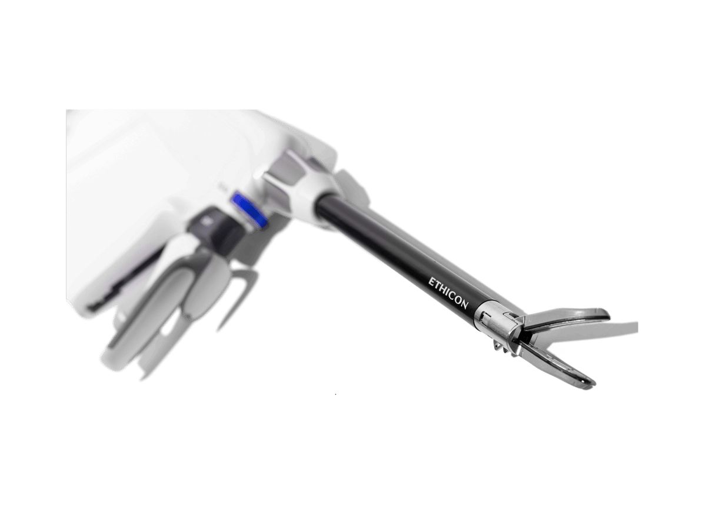
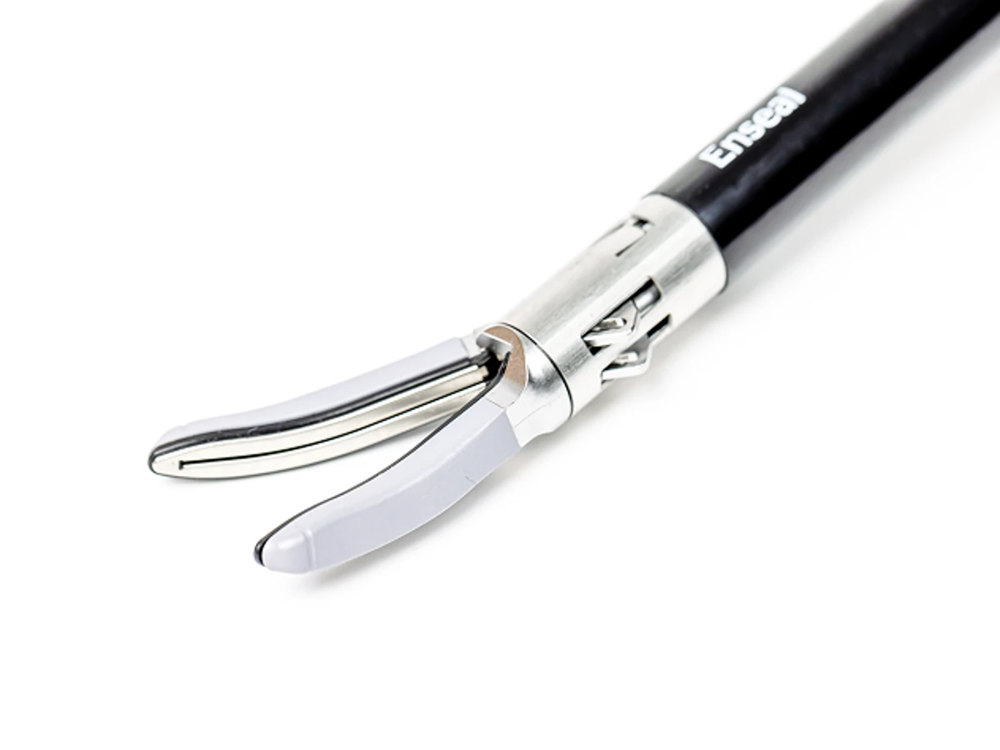

Energy Source
GEN11 Generator
Supplies bipolar electrosurgical energy and provides audible activation and end tones during the seal cycle.
This is a completely fictional, educational Six Sigma scenario created for my portfolio. I use the ENSEAL X1 product name only because I am familiar with the type of device and its publicly available information. The complaint trend, manufacturing setting, dimensional issue, root-cause conclusion, data, and any future analysis are invented. This project is not advertising, does not represent the actual performance of the product, and does not disclose confidential or proprietary information from Ethicon, Johnson & Johnson, or any other organization.
For this fictional project, I am working with the ENSEAL X1 Large Jaw Tissue Sealer, an advanced bipolar electrosurgical instrument designed for open surgical procedures. The device allows a clinician to grasp and dissect soft tissue, apply bipolar energy to seal vessels and tissue bundles, and then mechanically transect the sealed tissue using a knife that advances along the jaws.
According to the public instructions for use, the sterile, single-patient-use device is intended to coagulate and transect vessels up to and including 7 mm in diameter, as well as tissue and vascular bundles. The jaws hold the target tissue, the seal control delivers bipolar energy, and the separate cut control advances the knife to the cut line. The intended outcome is a controlled vessel seal followed by a complete tissue transection during open surgery.
Official Product Source ↗

Supplies bipolar electrosurgical energy and provides audible activation and end tones during the seal cycle.
Grasps the target tissue, delivers energy through the jaws, and advances a mechanical knife for transection.
Connect the attached power cord to the GEN11 generator and power on the system.
Rotate the shaft as needed and center the target vessel or tissue within the jaws.
Squeeze the closing handle until it latches, securing the tissue between the jaws.
Press the SEAL button or MIN foot pedal. The generator delivers bipolar energy and sounds an end tone when the cycle is complete.
After the end tone, fully press the CUT button so the knife advances along the jaws to the cut line.
After transection, squeeze the closing handle until it unlocks, then release the tissue.
Simplified educational workflow based on the public instructions for use. It is not a substitute for device training or the complete IFU.
The manufacturing site is receiving a high volume of customer complaints stating that the device does not consistently complete the intended tissue cut.
Initial root-cause analysis identifies inconsistency in manufactured knife length as the leading cause of the incomplete-cut complaint mode.
The project must understand and reduce knife-length variation so the cutting mechanism can perform consistently against its dimensional requirements.